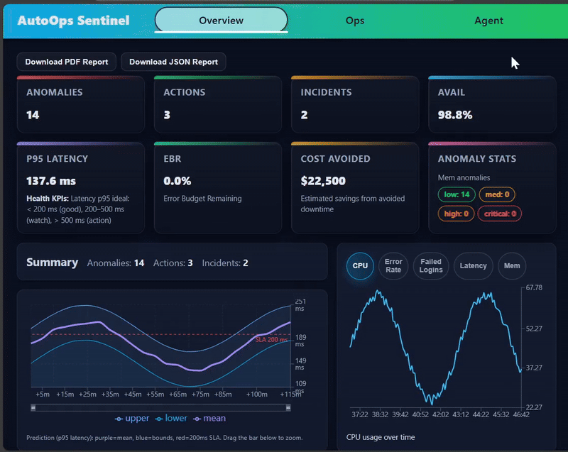
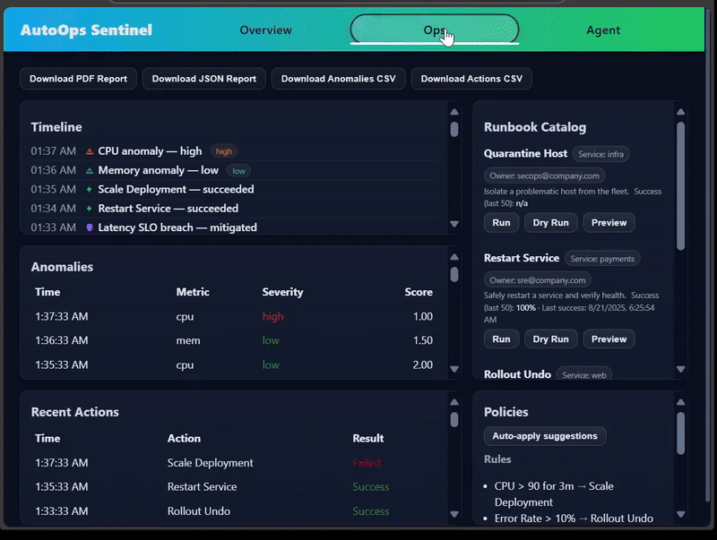
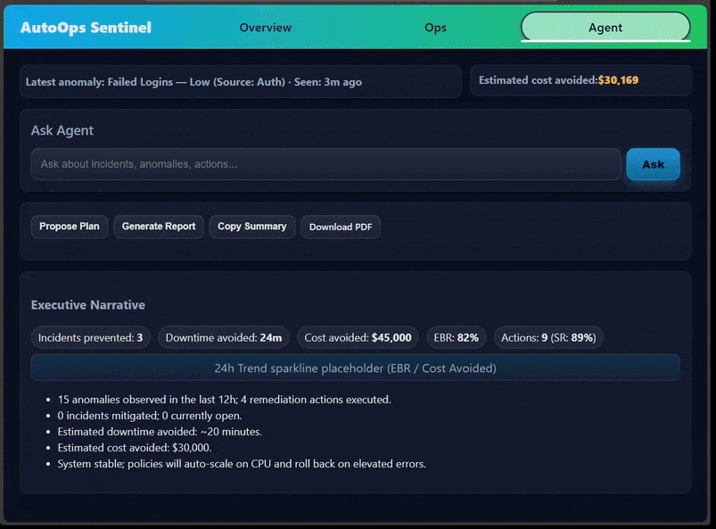

The world's most advanced AI operations platform. Automatically detect, analyze, and remediate infrastructure issues before they impact your business. Join Fortune 500 companies saving millions with autonomous operations.
Join industry leaders who have transformed their operations with AI. From Fortune 500 financial services to global e-commerce platforms, see how AutoOps Sentinel delivers unprecedented value and competitive advantage.
Real Impact: A Fortune 500 bank prevented a $50M trading system outage by detecting a memory leak 15 minutes before failure. Our AI identified the pattern that human operators missed.
Success Story: A global e-commerce platform handled Black Friday traffic spikes automatically, scaling from 3 to 47 servers in 2 minutes, preventing $12.5M in lost revenue.
Proven Results: A healthcare company predicted a database failure 2 hours in advance, automatically backing up critical patient data and preventing HIPAA violations worth $2.3M in fines.
Game Changer: A CTO asked "What's causing our API slowdown?" and got a complete root cause analysis in 30 seconds, including the exact line of code and recommended fix. No more waiting for expert analysis.
Built with security-first principles. Role-based access control, audit trails, and compliance frameworks ensure your operations remain secure and compliant.
Connect with your existing tools and workflows. Native integrations with Kubernetes, AWS, Azure, Prometheus, and 50+ other platforms.
See how industry leaders are using AutoOps Sentinel to gain competitive advantage and drive unprecedented results.
High-frequency trading systems require zero downtime. Our AI detected a memory leak 15 minutes before it would have crashed the entire trading platform.
Black Friday traffic spikes were automatically handled, scaling from 3 to 47 servers in 2 minutes, preventing catastrophic revenue loss.
Predicted database failure 2 hours in advance, automatically backing up critical patient data and maintaining HIPAA compliance.
See why Fortune 500 companies choose AutoOps Sentinel. This is the real platform, not a simulation. Watch our AI automatically detect, analyze, and remediate infrastructure issues in real-time.

Comprehensive dashboard showing system health, anomaly detection, and performance metrics. Watch as our AI continuously monitors your infrastructure and provides actionable insights.

Operations center showing automated incident response, runbook execution, and policy management. See how our platform handles complex operational workflows autonomously.

Natural language interface for querying system status, getting recommendations, and understanding complex operational scenarios. Experience the future of infrastructure management.
This is the actual AutoOps Sentinel platform with real enterprise data
Join leading enterprises who have revolutionized their infrastructure management with AutoOps Sentinel.